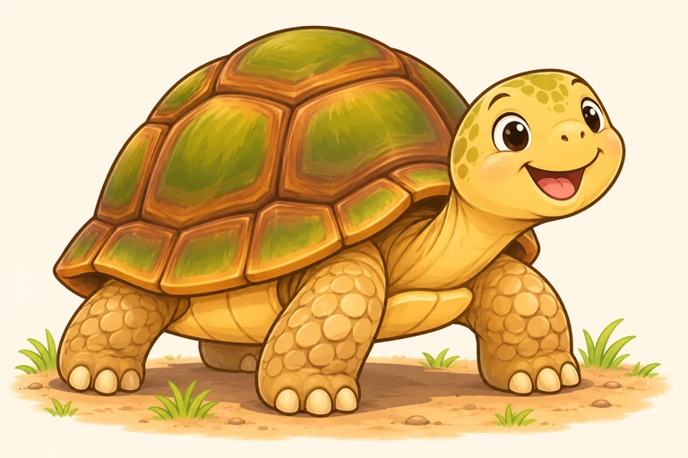

Unit 17 · Global Success 5 · Tập hai · Trang 46–51
Bài 1 · Từ và tranhBài 2 · Mẫu câu và nhịp câuBài 3 · Đọc, nghe và viết
Mỗi ngày thêm một điều em biết.
Học từ, nghe chậm, ABC và hội thoại; sáu đề theo ba cấp độ.
Bài1Nhân vật trong truyệnSGK trang 46–47
Who are the main characters in the story?
ant
grasshopper

tortoise
hare
They are the ant and the grasshopper. The tortoise and the hare · the fox and the crow · Snow White and the seven dwarfs. Main characters: nhân vật chính · fairy tale: truyện cổ tích.
Ant: kiến · grasshopper: châu chấu · tortoise: rùa cạn · hare: thỏ rừng. Đọc đúng truyện/thẻ được giao. Không đoán người đọc thích nhân vật nào từ tên truyện.
Bài2Hành động đã quaSGK trang 48–49
How did he/she + nguyên mẫu?
How did he run? — He ran fast. How did she cook? — She cooked well. Work → worked hard · sing → sang beautifully.
Sau did dùng run / cook / work / sing. Câu kể dùng ran / cooked / worked / sang. Không dùng did ran hoặc runned. Cách làm: fast / well / hard / beautifully.
Bài3Ngữ điệu, đọc và kểSGK trang 50–51
Câu hỏi Yes/No lên giọng.
Is this your storybook? ↗ Are you reading a story? ↗ Nhân vật, việc làm, cách làm và kết thúc phải theo đoạn đọc hiện tại; truyện có nhiều dị bản.
Thẻ tự soạn: Reader: Linh · focus character: hare · action: run · manner: fast. How did he run? He ran fast. Đọc kỹ đoạn truyện trước khi trả lời. Nghe Giỏi phân biệt hai người và lấy đủ hai ý.
Nội dung tự soạn, bám Unit 17 · Global Success 5, tập hai